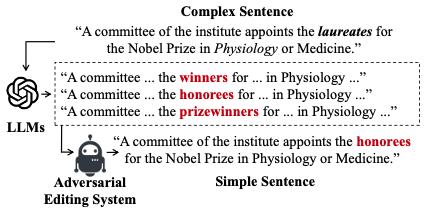

Research Highlights ([Full List])
Question Answering
We have developed question answering systems under different scenarios.
For Machine Reading Comprehension (MRC), we proposed different methods to improve the accuracy of answering questions over passages [AAAI'20; ACL'23].
For Knowledge Graph Question Answering (KGQA), we investegated and improved different modules in the QA framework, which achieve SOTA results in a variety of scenarios (e.g., simple questions [IJCAI'19], complex questions [WSDM'20; ACL'20; ACL'23], conversational questions [ACL'21]).
For Question Answering with Databases, we explored to generate complex questions in a low-resource condition [EMNLP'23] and align Large Language Models (LLMs) to a domain-specific database [ArXiv].
For Multi-modal Question Answering, we discussed the applications of LLMs and its safety issue [MM'23; IJCAI'24;ECCV'24].
There are surveys [TKDE'22] you can start with. We have demonstration pages [Demonstration Page] that you can try on!
There are surveys [TKDE'22] you can start with. We have demonstration pages [Demonstration Page] that you can try on!
Educational NLP

We have worked on the educational NLP tasks, such as Math Word Problem (MWP) solving [AAAI demo'22; ACL'23; EMNLP Finding'23], Chinese Spelling Check (CSC) [NLPCC'23], Grammatical Error Correction (GEC) [CIKM'23], Text Simplification [COLING'24].
There are surveys [ArXiv] you can start with.
There are surveys [ArXiv] you can start with.